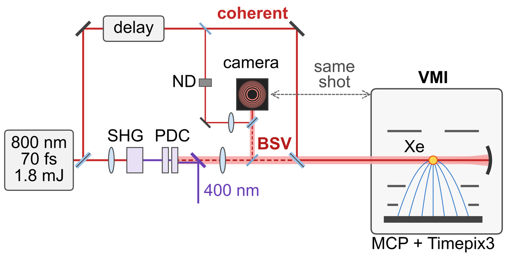
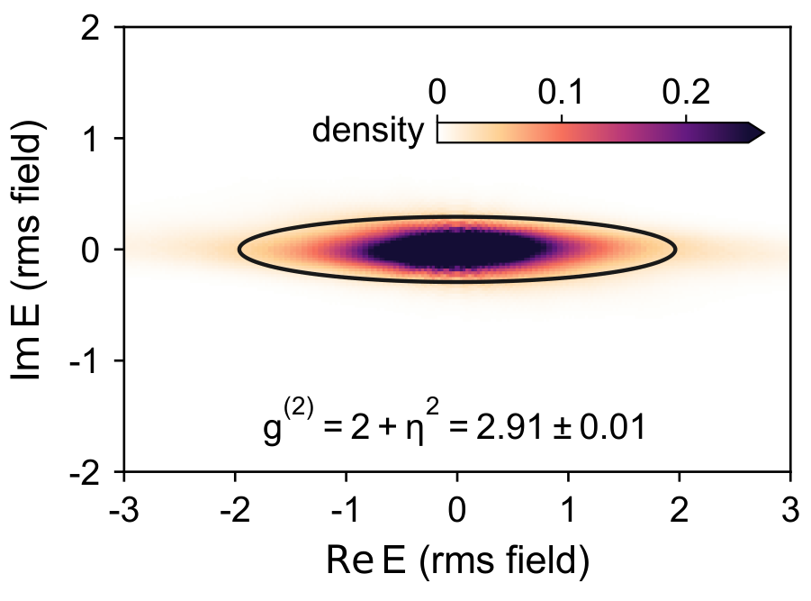

Strong-field ionization with bright squeezed vacuum

The question
Bright squeezed vacuum (BSV) is light with zero mean field whose noise is reduced in one quadrature and amplified in the other. Recent experiments have shown that its strong photon-number noise changes strong-field processes such as high-harmonic generation, photoemission from metal tips and the ionization of atoms. Those experiments recorded the size of the noise but not its phase dependence. Here a coherent field of the same color serves as the phase reference, and the question is which part of the BSV noise the photoelectrons respond to.
The experiment
The output of a Ti:sapphire amplifier at 800 nm is split in two. One beam is frequency-doubled and pumps degenerate parametric down-conversion in two BBO crystals, which makes the BSV; the other beam is the coherent field, much stronger than the BSV. The two are combined and focused into xenon in a velocity-map imaging spectrometer, where an MCP–Timepix3 detector records the photoelectrons.
Pick-offs of both beams form Newton rings on a camera. One Fourier coefficient of each frame gives the BSV amplitude and its phase relative to the coherent field, so the field is known on every shot of the 1 kHz laser and is paired with the electrons of the same shot. This readout, UNWRAP, is described in its own preprint (arXiv:2610.30005).

The relative phase of the two beams drifts freely during a run, so sorting the shots by the measured phase picks out two selections of the same light. With the noisy axis of the BSV along the coherent field, the noise goes into the amplitude of the total field while its zero crossings stay fixed (phase-squeezed light); with the noisy axis across the field, the noise shifts the zero crossings and leaves the amplitude almost unchanged (amplitude-squeezed light).
On average only about one electron is detected in every 30 shots, so nearly all of the shot-to-shot scatter in the count is counting noise, along with fluctuations of the laser pulse and the gas density that do not follow the BSV field. The shots are binned by their measured field, and the variance of the bin-averaged yield, with the finite-sample term subtracted, gives the part of the yield noise that follows the field. The uncertainties are standard deviations over bootstrap resamples of 60 s data blocks.
What we found
The field-correlated rms noise of the yield, relative to the coherent-only yield, falls from about 40% for phase-squeezed light to about 10% for amplitude-squeezed light. Relative to all BSV shots, the mean square of the BSV quadrature along the coherent field, measured by the camera, is 1.54 times larger in the phase-squeezed selection and 0.12 times as large in the amplitude-squeezed one, while the field-correlated variance of the electron yield changes by factors of 1.44 and 0.19. The optical and electron factors agree qualitatively, so what the electrons measure is mainly the BSV quadrature along the coherent field.

The BSV field is small, about 2.6% of the coherent field amplitude (rms, uncertain by about a quarter), yet it changes the total yield by about a third (rms over shots).
Resolved over the photoelectron spectrum, the noise is not uniform. It is largest for the non-resonant electrons, smaller at the 4f Freeman resonance and almost zero at the 5f resonance: using all BSV shots, without sorting by phase, the normalized variance g(2)−1 is 0.51 for the non-resonant electrons, 0.17 at the 4f peak and 0.015 at the 5f peak. A time-dependent Schrödinger equation (TDSE) calculation, averaged over the focal volume, reproduces this pattern with one free parameter, the BSV field strength, which comes out at 2.9%, close to the camera's 2.6%.
![Three panels. Left: xenon photoelectron momentum image with concentric above-threshold-ionization rings, measured and Abel-inverted halves, with the 4f and 5f resonances marked. Middle: maps of the change of the noise for phase-squeezed (red, increased) and amplitude-squeezed (blue, decreased) light. Right: energy spectrum folded onto one order with the 4f and 5f positions marked, and below it the noise for the three selections, highest for phase-squeezed light and lowest for amplitude-squeezed light, with TDSE curves.](../../assets/bsv-channel-noise.webp)
The channels differ in how they depend on intensity. Non-resonant electrons come from near the peak intensity, where the ionization rate rises most steeply. A Freeman channel is populated only where the pulse reaches the intensity that brings a Rydberg state into resonance, so its yield changes mainly through the size of the focal volume at that intensity. For the 4f state this is a small volume near the focal center, which a small rise in peak intensity enlarges strongly; for the 5f state it is a much larger volume, which the same rise barely changes. Because the BSV changes the intensity by only a few percent, the noise in each channel measures how steeply that channel's yield depends on intensity.
What comes next
What the electrons registered is the amplitude noise of the light. Its phase noise has not shown up yet, but strong-field ionization depends on the phase of the field within the optical cycle, so the phase noise should become visible in the electrons as well, and the atom would then read out both quadratures of the squeezed light.
My part
I built this experiment, including the single-shot readout; I run the measurements and analyze the data.
Papers and talk
- H. Ma et al., “Photoelectrons resolve the phase-dependent variance of bright squeezed vacuum.” Submitted to Physical Review Letters; arXiv:2610.31811 (2026).
- H. Ma et al., “UNWRAP: Single-shot phase analysis of bright squeezed vacuum by Newton-ring interferometry.” arXiv:2610.30005 (2026).
- Two-color strong-field ionization with non-classical light. Oral talk, APS DAMOP 2026.